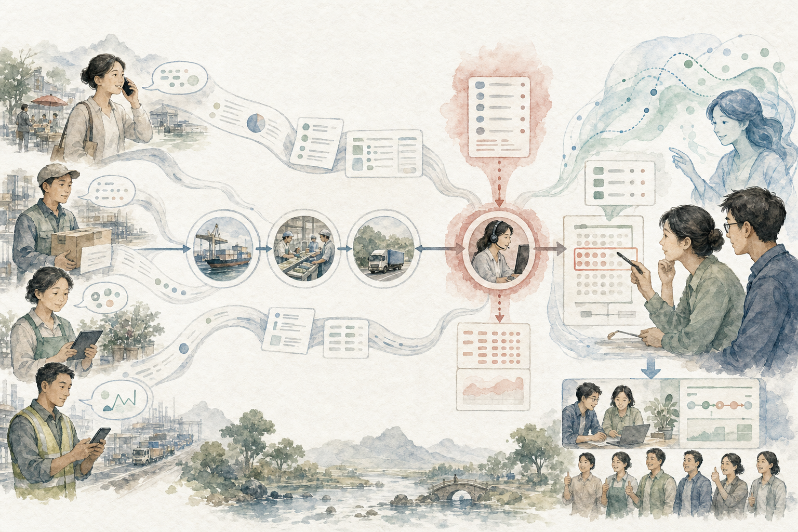

所有知识都挂到这句话上。不能解释客户结果的资料，先放入候选区，不进入主线。
行业侦察 · 从真实业务出发
先看懂价值怎样流动，再决定 AI 放在哪里
不要求先成为行业专家。沿着客户、交付、信息、决策和结果走一遍，就能在 48 小时内形成第一版行业地图，并找出一个值得验证的 AI 切口。
人的核心任务理解目标、判断例外、确认责任；资料搜集、对照、归纳和草案交给 Agent。

一套可迁移的方法
六步看懂任何行业
先建立“够用的真实模型”，再逐层补知识；不从百页行业报告开始。
第一版
- 01定义边界
客户为什么付钱？
写清客户、待完成任务、付费结果、主要成本与不可犯的错误。
Agent 做：整理公开资料、生成假设清单。人确认：谁真正付钱、谁真正使用。 - 02画业务骨架
价值经过哪些环节？
用“获客 → 设计 → 采购 → 交付 → 服务 → 回款”建立一级流程，再按行业增删。
Agent 做：以 APQC PCF 对照遗漏。人确认：本企业真实做法。 - 03收集现实证据
工作实际上怎样发生？
访谈一线、跟走一次订单，收集表格、聊天、工单、会议和系统事件日志。
Agent 做：抽取角色、输入、动作、输出、等待。人确认：例外与潜规则。 - 04找到约束
哪里最慢、最贵、最容易错？
不要平均优化。先找吞吐量受限处，以及重复录入、等待审批、返工和信息断点。
Agent 做：统计周期、返工和异常模式。人确认：真正的系统瓶颈。 - 05匹配 AI 角色
AI 是看懂、判断还是执行？
区分提取归类、检索对照、生成建议、跨系统行动；越靠近执行，授权和验证越严格。
Agent 做：给出候选方案与风险。人确认：决策权和不可自动化边界。 - 06做最小实验
怎样证明它真的有效？
用一类输入、一个团队、一个结果跑 2–4 周；保留基线、人工复核和回滚。
Agent 做：执行可逆步骤并留证。人确认：是否扩展并沉淀为 Skill。
不是一份行业报告
最后只交付一张“行业作战图”
- 价值流
- 从需求出现到客户获得结果
- 关键角色
- 付款者、使用者、执行者、决策者
- 证据与系统
- 文档、对话、工单、表格、事件日志
- 瓶颈
- 等待、返工、错误、波动、知识断层
- AI 切口
- 输入、动作、输出、人审与失败队列
- 商业结果
- 周期、成本、质量、收入或风险
防止“看起来很懂”：每条结论必须附来源、日期、适用范围和待验证假设；流程图必须由一线人员走查。
从问题到解决方案
先判断 AI 适不适合，再谈模型
看懂
OCR、提取字段、分类、摘要、去重、结构化。
适合：资料多、规则清楚、人工容易抽查。判断辅助
检索历史案例、对照标准、发现异常、给出候选原因。
适合：有知识库、有明确验收人。生成方案
起草回复、计划、报告、报价或任务分解，并附依据。
适合：输出可编辑、错误可恢复。执行行动
写入系统、创建任务、发送消息、触发工作流。
必须：权限最小化、确认门、日志和回滚。方案不是“接一个大模型”业务问题 × 可信数据 × AI 动作 × 人工决策 × 系统闭环 × 衡量指标
缺任何一项，都只是演示。优先选择量大、重复、标准明确、有证据、可复核、可回滚的任务。
示范行业 · 汽车制造
把方法跑一遍，而不是背汽车术语
汽车行业用来展示复杂研发、供应链、制造、质量与服务如何连成一条价值流。
不是模板
01用户与市场VOC · 竞品 · 定义02产品与研发需求 · 变更 · 试验03供应链交付物 · 产能 · 风险04工厂制造节拍 · 异常 · 交接05质量闭环缺陷 · 根因 · 追溯06销售与售后线索 · 工单 · 反馈
VOC 到需求太慢
AI：从客服、门店和试驾记录提取车型、部件、情境与问题，聚类重复反馈并保留原文证据。
人审产品优先级 · KPI：标注时长、重复问题发现时间供应商资料反复退回
AI：对照 APQP 清单检查缺件、字段冲突和过期版本，只生成预审说明。
SQE 决定通过 · KPI：首次完整率、退回轮次现场异常信息不全
AI：从表单、文字和图片提取产线、工位、现象与影响范围，路由给正确责任人。
班组长确认等级 · KPI：首响时间、闭环周期历史质量问题找不到
AI：按现象、零件和工艺检索相似案例，归纳旧措施及验证结果，不替代根因分析。
质量工程师验证 · KPI：检索时长、重复缺陷率汽车行业的最后一票仍在人
功能安全、质量放行、实时设备控制、法规结论、客户承诺与基线变更不能由生成式 AI 自动决定。Toyota 的“自働化”也不是无人化，而是在异常时停下来，让问题被看见并由人处理。
查看 Toyota TPS 官方说明知名实践者的第一性原理
五条足够指导大多数行业诊断
竞争发生在活动系统，不在口号
先看一组活动怎样共同创造差异与成本优势，再判断 AI 改变的是哪项活动及其联动。
系统产出由约束决定
优化非瓶颈可能只制造更多在制品。先找到限制整体吞吐量的一个约束。
到现场，看事实
流程文件描述“应该怎样”，一线观察与事件日志揭示“实际怎样”；先暴露异常，再自动化。
价值由客户定义
识别价值、画出价值流、建立流动和拉动，再持续消除不创造客户价值的浪费。
用事件数据还原真实流程
从案例 ID、活动和时间戳发现流程、偏差与瓶颈，避免只靠访谈拼出理想流程。
经过来源与许可核验
书、论文与可复用项目
先读这五本
- 01《Understanding Michael Porter》
行业结构、价值链与活动系统；先学如何问战略问题。
- 02《The Goal》
用故事理解约束、吞吐量、库存与运营费用。
- 03《Lean Thinking》
从客户价值到价值流、流动、拉动和持续改进。
- 04《Learning to See》
把当前状态与未来状态画成可共同讨论的价值流图。
- 05《Process Mining: Data Science in Action》
用事件日志做流程发现、一致性检查和性能分析。
开源与源码可见工具：先看用途，再看许可证
下一步
带着一个真实行业问题开始
例如：“我想快速了解连锁餐饮的门店补货流程，并找出一个两周可验证的 AI 提效方案。”系统应先追问必要条件，再生成行业作战图，而不是给一篇泛泛的行业介绍。